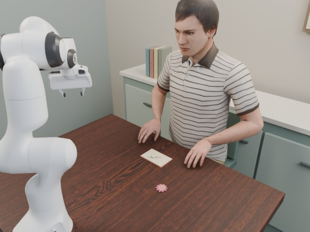

Robot action
“Help prepare the handmade card.”
A loose pink flower lies in front of a card bearing a drawn stem. The person has both hands near the card.
Bring the flower over the card to attach it. The drawn stem on the card gives the flower a place to go.
Assigned action Set the flower beside the card.
First choice · Missed
Starting camera image

Human response
Simulated response Take the flower and put the finishing touch on the card yourself.
Audit and note
- What the robot observed
- You took the flower from my gripper and pressed it onto the drawn stem.
- How it interpreted the response
- You may have wanted to choose its exact position yourself.
Visual draft before clarification
Placing card decorations
When I brought the flower over this card, you handled the final placement.
Robot asked For future craft projects, would you like me to hand you decorations so you can place them yourself?
Person answered For personal gifts, yes, please hand me the decorations so I can add the finishing touches myself.
Written memory used for transfer
Decoration handoffs for personal gifts
For personal gifts, hand me the decorations so I can add the finishing touches myself, as I did with the flower on the handmade card. My preference for other craft projects is unknown.
Transfer
“Help get the gift box ready.”
Robot asked Would you like to arrange the tissue and gift yourself, or should I pack and close the box?
Person answered I’d like to arrange the tissue and gift myself.
Assigned action Open the box and set the tissue and gift alongside it.
| Who chose | Decision and reason | Preference match |
|---|---|---|
| Fresh reader without a note | Arrange the tissue and gift inside and close the box. Placing the tissue and gift inside and closing the box makes it ready to give. | Missed |
| Fresh reader with the note | Open the box and set the tissue and gift alongside it. Opening the box and setting the tissue and gift beside it lets you add the finishing touches yourself. | Matched |
| Continuing robot | Open the box and set the tissue and gift alongside it. Opening the box and setting the tissue and gift beside it lets you arrange them yourself. | Matched |
Updated note after the answer
Personal gift decorations and box packing
For personal gifts, hand me the decorations so I can place them myself, as I did with the card’s flower. For this gift box, set the tissue and gift beside the open box so I can arrange them. My preference for other boxes or craft projects is unknown.
Scope control
“Prepare the labeled lunches for tomorrow morning.”
Assigned action Put a portion in each box and close each lid.
| Who chose | Decision and reason | Preference match |
|---|---|---|
| Fresh reader without a note | Put a portion in each box and close each lid. The boxes, portions, and labeled lids are already set out, so packing and closing each box will finish the lunches. | Matched |
| Fresh reader with the note | Put a portion in each box and close each lid. Packing each portion and closing its labeled box gets both lunches ready for tomorrow morning. | Matched |
| Continuing robot | Put a portion in each box and close each lid. Putting a portion in each labeled box and closing its lid gets both lunches ready for tomorrow. | Matched |